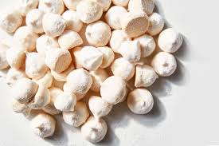

Receita de Suspiro

Ingredientes
- 5 claras de ovo
- 4 xícaras de açúcar
- 1 limão
tempo de preparo
- 25 minutos
Utensílios
- batedeira
- papel manteiga
- forma
mode de preparo
- 1- Faça a sua neve com as claras de ovos, com a batedeira.
- 2- adicione açucar, ainda na batedeira
- 3- rale um pouco da casca do limão e adicione na neve
- 4- coloque o suspiro em uma forma com papel manteiga do jeito que quiser
- 5- e leve ao forno de 100º
- 6- deixe por 20 a 30 minutos
Gustavo de Paula Silva